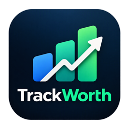

Your net worth, tracked calmly and privately
TrackWorth is a desktop app for recording your account balances by hand and watching how they change over time.
How it works
- Manual by design. You type in your balances. TrackWorth never connects to your bank or any financial service.
-
Your data, in your Drive. Everything is saved as readable files in a
TrackWorthfolder in your own Google Drive, one file per financial year. - No servers, no tracking. TrackWorth has no backend and no analytics. The developer never receives your data.
- Least access. TrackWorth can only see the files it creates in your Drive, not the rest of your files.
- Updates you approve. New versions are offered in the app and installed only when you say so.
Signing in with Google
TrackWorth uses Google sign-in so it can store your data file in your Google Drive and show your name in the app. Read the Privacy Policy for exactly what is accessed and why.